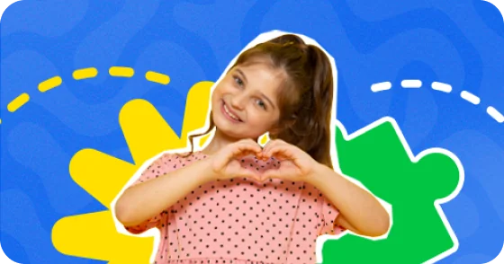
Guía · Tema: Emociones
Prototipo académico · Jornada UAM – UNICEF 2026
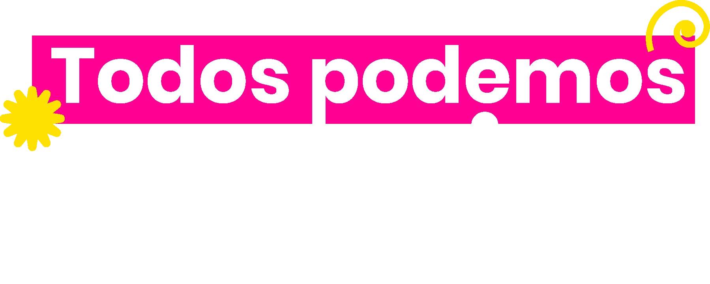
Una app para estudiantes de 3.º a 11.º grado: informate, cuidá tus emociones y pedí apoyo a una mesa de escucha humana.
No es solo para los días difíciles
Información, actividades y una pieza que podés hacer tuya. Lo mismo que vas a encontrar al abrir SéTú.

Guía · Tema: Emociones
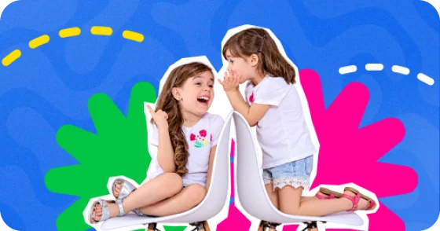
Video · Tema: Convivencia
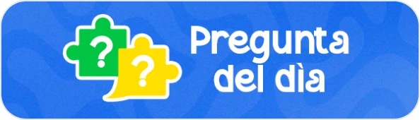
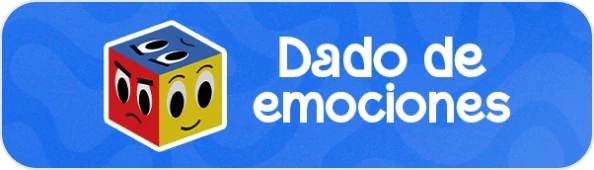
Todas las piezas
tienen un lugar.
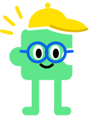
Forma · Color · Accesorios
Hablar puede costar cuando hay miedo, vergüenza o dudas sobre quién va a escuchar. SéTú propone un primer paso privado, con información y acompañamiento humano.
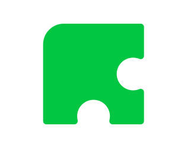
Pedir apoyo, paso a paso
Escaneá el cartel QR de tu centro o escribí su código. Confirmá el colegio antes de seguir; no te pedimos tu nombre real, correo ni teléfono.
Con señal, la alerta se envía por internet. Sin señal, se guarda cifrada e intenta pasar de celular en celular hasta uno que la pueda entregar. La entrega no está garantizada y el chat necesita internet.
Elegí si te está pasando a vos o si querés ayudar a alguien. La propuesta es una mesa de escucha humana en horarios acordados, y unas tarjetas te ayudan a empezar cuando faltan las palabras.
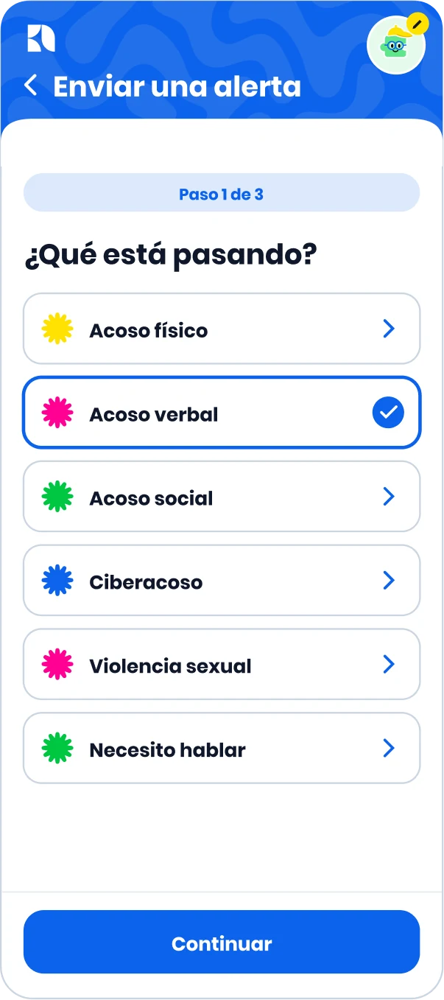
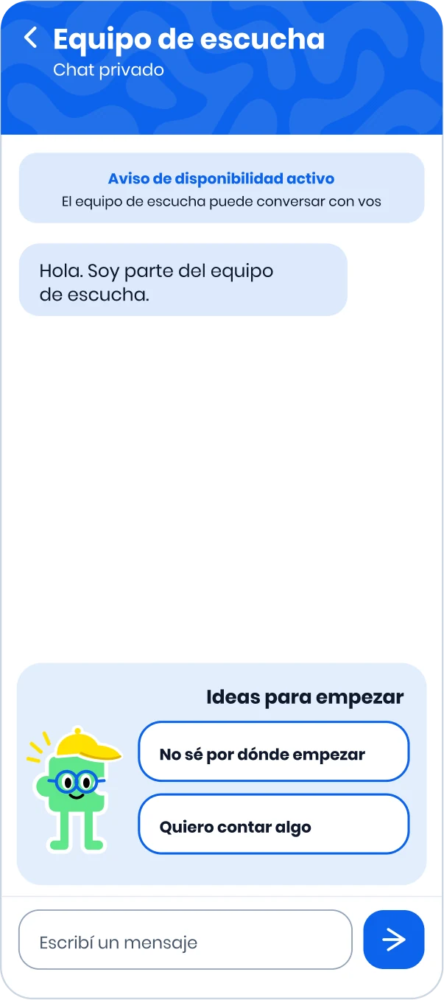
Usás el código de tu colegio, no tu nombre. La ubicación solo sirve para confirmar que estás en tu centro educativo.
La alerta se guarda cifrada e intenta pasar de celular en celular hasta uno que la pueda entregar. Necesita celulares cercanos con SéTú y permisos de conexión. La entrega no está garantizada y el chat necesita internet.
Por diseño, el colegio recibe el tipo de situación, tu rol y la hora, pero no tu conversación. El relato y el chat son para vos y la mesa de escucha asignada. Lo que escribís puede identificarte, y si hay riesgo, la mesa puede activar protección.

La app es una parte. La otra es una campaña que proponemos para que hablar de salud mental deje de ser tabú: TikTok e Instagram para jóvenes, Facebook para madres y padres, radio local y el kit «Pieza a Pieza» en las aulas.
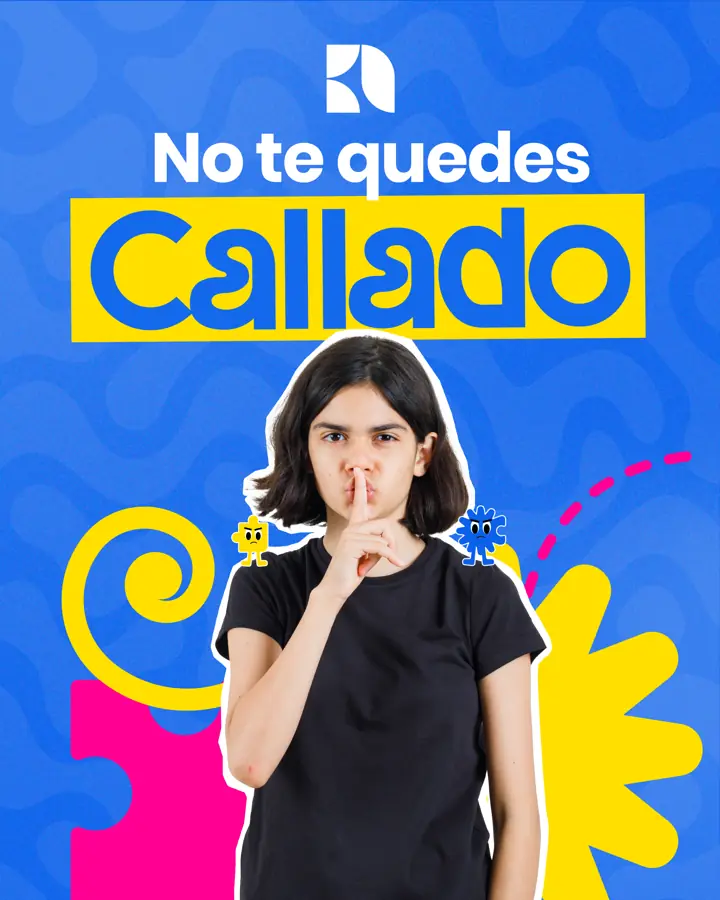


Tres partes conectadas en el modelo de SéTú. Los paneles web y la coordinación con las instituciones están pendientes de validación; la demo actual incluye vistas móviles para personal autorizado.
En el modelo, recibe avisos mínimos y fichas autorizadas del centro, y registra lo que hace sin ver el relato ni el chat.
En el modelo, recibe primero el aviso y da seguimiento a las fichas autorizadas, sin ver el relato ni el chat.
Información, actividades y solicitudes privadas de apoyo. La propuesta incluye chat con una mesa de escucha humana asignada, en horarios acordados.
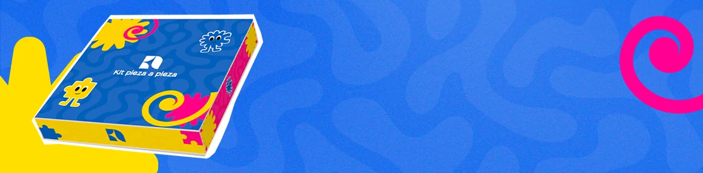
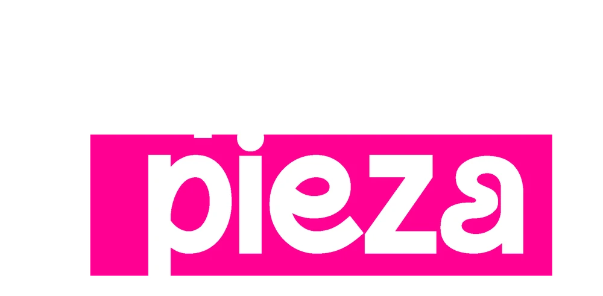
Entrás sin poner tu nombre real. Vos elegís qué contar, pero tu relato puede revelar quién sos. El diseño reserva el relato y el chat a la mesa de escucha asignada; MINED y Dirección reciben datos limitados. No se promete anonimato absoluto.
La alerta puede intentar pasar cifrada entre celulares cercanos con SéTú hasta uno que la pueda entregar. Depende de permisos, de los celulares cercanos y de la conexión; no equivale a una entrega confirmada. El chat sí necesita internet. La app te muestra si la alerta está pendiente, si llegó al colegio o si ya la recibió el sistema.
La propuesta es una mesa de escucha humana, con supervisión profesional. Antes de atender casos reales hay que confirmar responsables, convenios y horarios. Si no sabés cómo empezar, hay tarjetas como «Me cuesta hablar de esto en casa» que te ayudan a escribir el primer mensaje.
Sí. Al pedir apoyo elegís «Quiero ayudar a un compañero» y participás como testigo solidario. Evitá detalles que te identifiquen si no querés compartirlos.
El diseño separa entrega de la alerta y seguimiento institucional. La app informa sobre la entrega; los estados internos de atención los gestiona el personal autorizado. En esta demo se usan datos ficticios.
Para eso proponemos el kit «Pieza a Pieza»: tu docente puede hacer dinámicas cortas en clase para hablar de emociones, sin pantallas.
Probalo en el stand o llevalo con vos
Todo en un lugar para estudiantes, docentes y jurado.
APK de prueba del 16 de noviembre. Android 7 o superior · 194 MB. Descargalo con wifi y usá solo datos ficticios.
Drive abre el archivo y puede mostrar un aviso por su tamaño. Esta demo no recibe casos reales.
Descargar APK de SéTúLa identidad de SéTú: logotipos, paleta inclusiva, tipografías y usos de la marca.
Abrir Manual de MarcaDocumentación para Colegio, MINED, Mesa de Escucha y actividades del kit «Pieza a Pieza».
Consultar manuales ¿Nos ves desde el stand?
¿Nos ves desde el stand?Recorridos con datos de prueba. Tocá reproducir para ver cada uno.
Elegir situación, revisar y enviar; chat humano cuando hay disponibilidad.
Explorar temas, guías y rutas sin necesidad de enviar un reporte.
Inicio, biblioteca y apoyo en una sola experiencia.